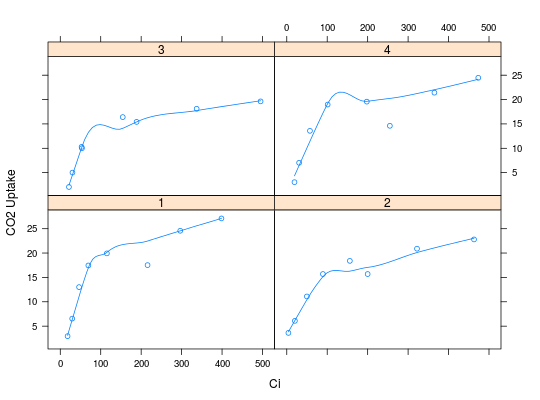

plotAC(data, fittd, id.col = 1, trt.col = 2, ylab = "CO2 Uptake", xlab = "Ci", by = c("trt", "ID"), type = c("p", "smooth"))
mOpc4photo; assumed to have the following
structure col 1: trt col 2 (optional): other treatment
factor col 2: Assimilation col 3: Quantum flux col 4:
Temperature col 5: Relative humidity col 6: Intercellular
CO2 col 7: Reference CO2xyplot. It changes the plotting symbols
behavior.Function to plot A/Ci curves
A small helper function that can be used to easily plot multiple A/Ci curves
data(aci) plotAC(aci, trt.col=1)